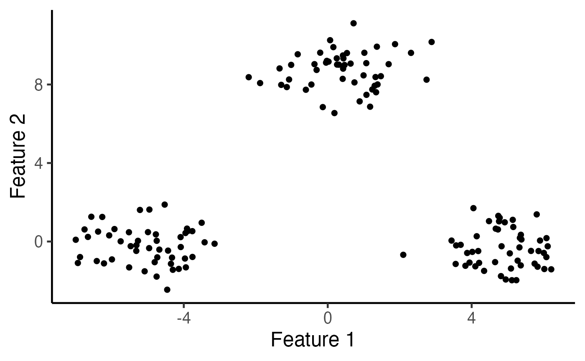
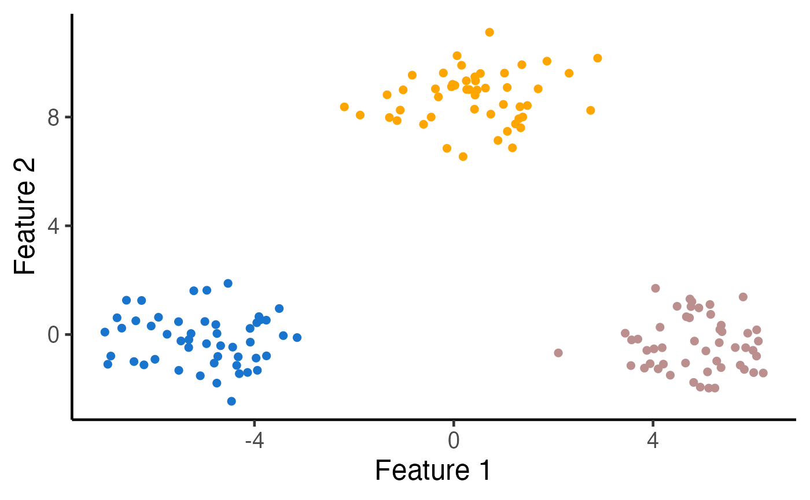

kmeans_inference.RdThis functions tests the null hypothesis of no difference in means between
two estimated clusters cluster_1 and cluster_2 of the output of the
k means clustering solution obtained via the Lloyd's algorithm.
The ordering are numbered as per the results of the kmeans_estimation
function in the KmeansInference package.
kmeans_inference( X, k, cluster_1, cluster_2, iso = TRUE, sig = NULL, SigInv = NULL, iter.max = 10, seed = 1234, tol_eps = 1e-06, verbose = TRUE )
| X | Numeric matrix; \(n\) by \(q\) matrix of observed data |
|---|---|
| k | Integer; the number of clusters for k-means clustering |
| cluster_1, cluster_2 | Two different integers in 1,...,k; two estimated clusters to test, as indexed by the results of
|
| iso | Boolean. If TRUE, an isotropic covariance matrix model is used. |
| sig | Numeric; noise standard deviation for the observed data, a non-negative number;
relevant if |
| SigInv | Numeric matrix; optional \(q\) by \(q\) matrix specifying \(\Sigma^{-1}\); relevant if |
| iter.max | Positive integer; the maximum number of iterations allowed in the k-means clustering algorithm. Default to |
| seed | Random seed for the initialization in k-means clustering algorithm. |
| tol_eps | A small number specifying the convergence criterion for the k-means clustering,
default to |
Returns a list with the following elements:
pval the selective p-value \(p_{k-means}\) in Chen and Witten (2022+)
final_interval the conditioning set of Chen and Witten (2022+), stored as the Intervals class
test_stats test statistic: the difference in the empirical means of two estimated clusters
final_cluster Estimated clusters via k-means clustering
Consider the generative model \(X \sim MN(\mu,I_n,\sigma^2 I_q)\), The k-means clustering
solves the following optimization problem
$$ \sum_{k=1}^K \sum_{i \in \mathcal{C}_k} \left\Vert x_i - \frac{\sum_{i \in \mathcal{C}_k} x_i}{|\mathcal{C}_k|}
\right\Vert_2^2 , $$
where \(\mathcal{C}_1,..., {\mathcal{C}_K}\) forms a partition of the integers \(1,..., n\), and can be regarded as
the estimated clusters of the original observations. In practice, solutions to the optimization problem is
often obtained using iterative algorithms, e.g., the Lloyd's algorithm.
Now suppose we want to test whether the means of two estimated clusters cluster_1 and cluster_2
are equal; or equivalently, the null hypothesis of the form \(H_{0}: \mu^T \nu = 0_q\) versus
\(H_{1}: \mu^T \nu \neq 0_q\) for suitably chosen \(\nu\) and all-zero vectors \(0_q\).
This function computes the following p-value: $$P \left( |X^T \nu| \ge |x^T \nu| \; | \; \bigcap_{t=1}^{T}\bigcap_{i=1}^{n} \left\{ c_i^{(t)} \left( X \right) = c_i^{(t)}\left( x \right) \right\}, \Pi_\nu^\perp Y = \Pi_\nu^\perp y \right),$$ where \(c_i^{(t)}\) is the is the cluster assigned to the \(i\)th observation at the \(t\)th iteration of the Lloyd's algorithm, and \(\Pi_\nu^\perp\) is the orthogonal projection to the orthogonal complement of \(\nu\). In particular, the test based on this p-value controls the selective Type I error and has substantial power. Readers can refer to the Sections 2 and 4 in Chen and Witten (2022+) for more details.
Chen YT, Witten DM. (2022+) Selective inference for k-means clustering. arXiv preprint. https://arxiv.org/abs/xxxx.xxxxx. Lloyd, S. P. (1957, 1982). Least squares quantization in PCM. Technical Note, Bell Laboratories. Published in 1982 in IEEE Transactions on Information Theory, 28, 128–137.
library(KmeansInference) library(ggplot2) set.seed(2022) n <- 150 true_clusters <- c(rep(1, 50), rep(2, 50), rep(3, 50)) delta <- 10 q <- 2 mu <- rbind(c(delta/2,rep(0,q-1)), c(rep(0,q-1), sqrt(3)*delta/2), c(-delta/2,rep(0,q-1)) ) sig <- 1 # Generate a matrix normal sample X <- matrix(rnorm(n*q, sd=sig), n, q) + mu[true_clusters, ] # Visualize the data ggplot(data.frame(X), aes(x=X1, y=X2)) + geom_point(cex=2) + xlab("Feature 1") + ylab("Feature 2") + theme_classic(base_size=18) + theme(legend.position="none") + scale_colour_manual(values=c("dodgerblue3", "rosybrown", "orange")) + theme(legend.title = element_blank(), plot.title = element_text(hjust = 0.5))  k <- 3 # Run k-means clustering with K=3 estimated_clusters <- kmeans_estimation(X, k,iter.max = 20,seed = 2021)$final_cluster table(true_clusters,estimated_clusters) #> estimated_clusters #> true_clusters 1 2 3 #> 1 0 50 0 #> 2 0 0 50 #> 3 50 0 0 # Visualize the clusters ggplot(data.frame(X), aes(x=X1, y=X2, col=as.factor(estimated_clusters))) + geom_point(cex=2) + xlab("Feature 1") + ylab("Feature 2") + theme_classic(base_size=18) + theme(legend.position="none") + scale_colour_manual(values=c("dodgerblue3", "rosybrown", "orange")) + theme(legend.title = element_blank(), plot.title = element_text(hjust = 0.5))  ### Run a test for a difference in means between estimated clusters 1 and 3 cluster_1 <- 1 cluster_2 <- 3 cl_1_2_inference_demo <- kmeans_inference(X, k=3, cluster_1, cluster_2, sig=sig, iter.max = 20, seed = 2021) summary(cl_1_2_inference_demo) #> cluster_1 cluster_2 test_stats p_kmeans p_naive #> 1 1 3 10.44088 4.473563e-15 0